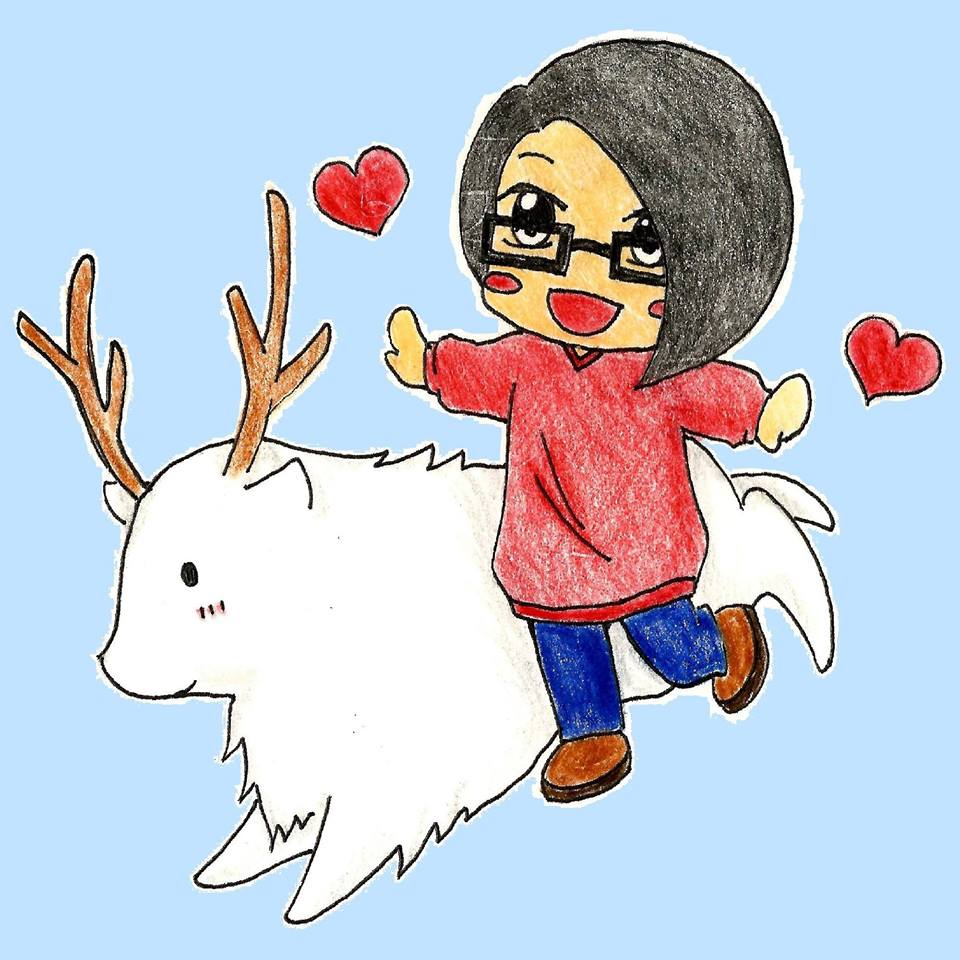

(ﾉ◕ヮ◕)ﾉ*:･ﾟ✧ 版主自薦?喔!錯了~是個人檔案啦!

姓名: 鄭呆呆
英文姓名: Erica
出生地: 台灣桃園市
身高: 165cm
體重: (っ・Д・)っ 不能說!!
個性: 沉穩(自以為)
星座: 天秤座
興趣: 看電影!!!準備暑假Follow啦!
專長: (๑•́ ₃ •̀๑) 嗯...畫圖?上面那張就是本大大畫的喔!!
夢想: 如果我說沒有是不是很欠打? ╮(╯∀╰)╭
口頭禪: 嚇死本大大了!!!!! (╯⊙Д⊙)╯ ┻━┻
喜歡的動物: 自己找,很明顯內~☝☝☝
喜歡的食物: 太多,說不完,能吃就是福!!! ε٩(๑> ₃ <)۶з
最想做的事: 溜冰...但是偶的平衡感...... (≖ᴗ≖๑)
最喜歡的顏色: 我覺得超明顯,整個版面最顯眼的地方就是了!
最後說一些結語: (╯°▽°)╯︵ ✿ﾟ灑花~~終於佔完版面了,啊!不是!重來:是否有些了解偶了咩~?很高興認識各位喔!!